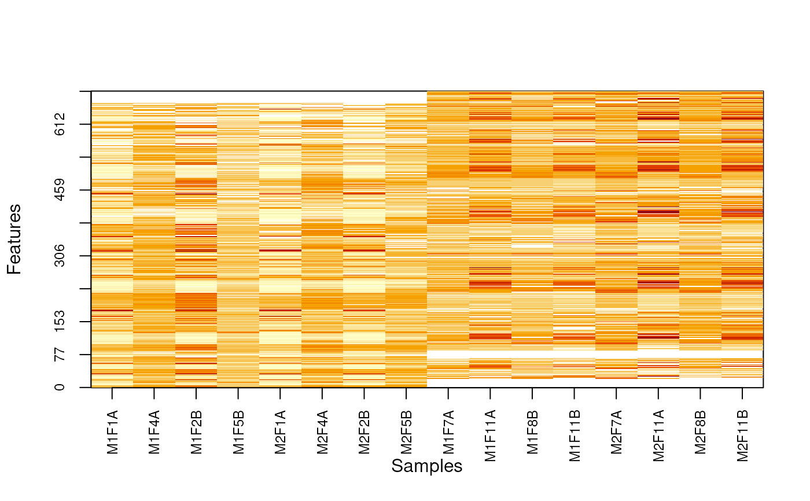

Produces a heatmap after reordring rows and columsn to highlight missing value patterns.
imageNA2( object, pcol, Rowv, Colv = TRUE, useGroupMean = FALSE, plot = TRUE, ... )
Arguments
| object | An instance of class MSnSet |
|---|---|
| pcol | Either the name of a phenoData variable to be used to
determine the group structure or a factor or any object that can
be coerced as a factor of length equal to nrow(object). The
resulting factor must have 2 levels. If missing (default)
|
| Rowv | Determines if and how the rows/features are
reordered. If missing (default), rows are reordered according to
|
| Colv | A |
| useGroupMean | Replace individual feature intensities by the group mean intensity. Default is FALSE. |
| plot | A |
| ... | Additional arguments passed to |
Value
Used for its side effect of plotting. Invisibly returns Rovw and Colv.
Examples
library("pRolocdata") library("pRoloc") data(dunkley2006) pcol <- ifelse(dunkley2006$fraction <= 5, "A", "B") nax <- makeNaData(dunkley2006, pNA = 0.10) exprs(nax)[sample(nrow(nax), 30), pcol == "A"] <- NA exprs(nax)[sample(nrow(nax), 50), pcol == "B"] <- NA MSnbase:::imageNA2(nax, pcol)MSnbase:::imageNA2(nax, pcol, useGroupMean = TRUE)MSnbase:::imageNA2(nax, pcol, Colv = FALSE, useGroupMean = FALSE)MSnbase:::imageNA2(nax, pcol, Colv = FALSE, useGroupMean = TRUE)